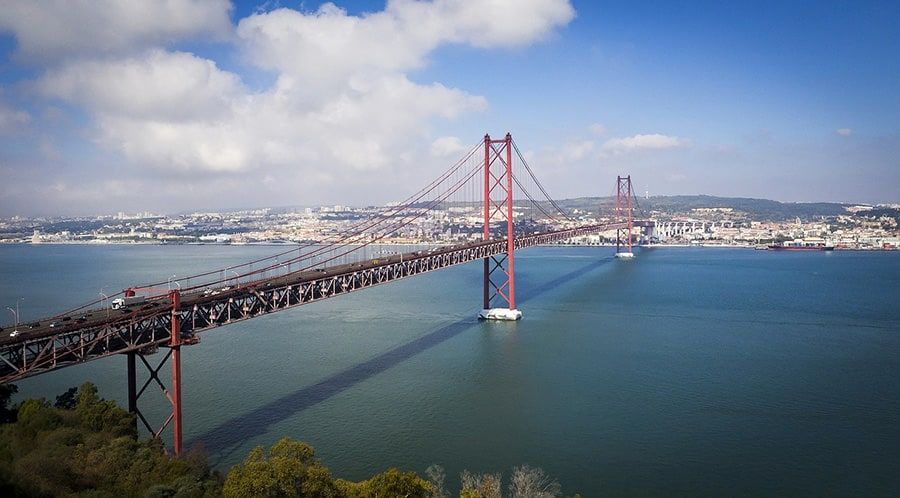
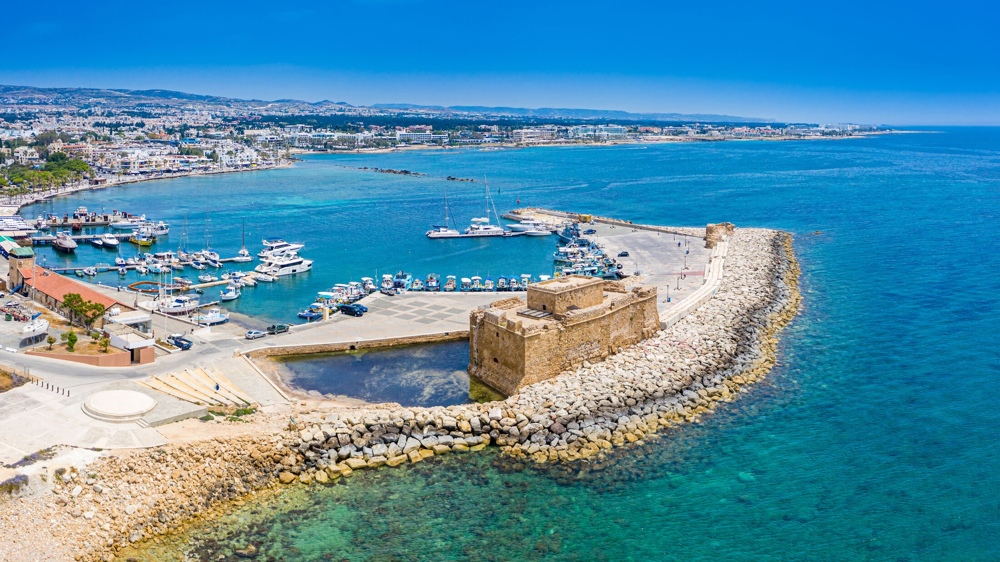
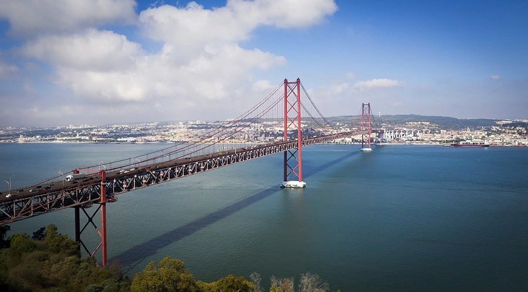
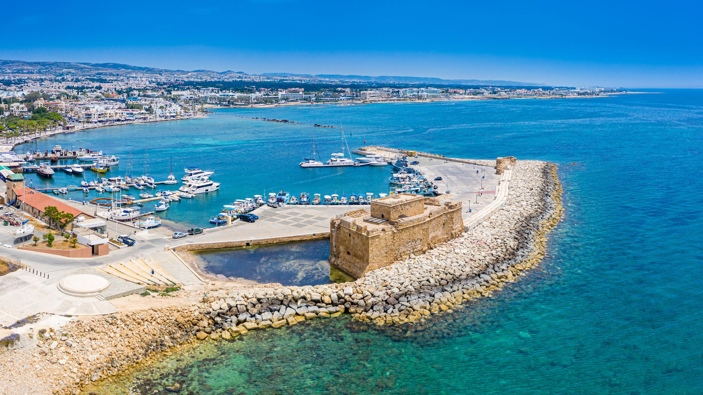

Moja Erasmus izkušnja
 Krakow

Lizbona

Paphos
Krakow

Lizbona

Paphos
 Berlin
Berlin
Moja Erazmus izkušnja ni bila samo študiranje. Vključevala je številna potovanja, od enodnevnih izletov po Nemčiji, do več dnevnih potovanj po celi Evropi. Spodaj si lahko ogledaš več utrinkov mojih potovanj.
Gran Canaria
- Maspalomas Dunes
- Las Palmas City
- Roque Nublo
- Puerto de Mogán
Na Gran canario smo potovali od petega do dvanajstega marca 2025. Potovanje se je začelo z zelo zgodnjim letom in letališča Memmingen. Po 5 - urnem letu smo pristali na sončni Gran canariji. Namestili smo se v apartma in se kmalu za tem odpravili na prvo peščeno plažo. V naslednjih dnevih smo si ogledali glavne znamenistosti tega otoka, kot so peščine Maspalomas, glavno mesto Las Palmas, najvišji vrh otoka Pique de las Nives in doživeli nepozaben dan na all inclusive vožnji z ladjico.
Krakow
- Glavni trg (Rynek Główny)
- Wawel grad
- Barbakan
- Šehoviške ulice
V Krakowu smo uživali v bogati zgodovini mesta, obiskali znameniti Wawel grad, raziskovali slikoviti glavni trg in se sprehajali po starih ulicah. Mesto je polno kulture, odličnih restavracij in prijaznih ljudi, ki naredijo izkušnjo nepozabno.


Paphos
- Arheološki park Paphos
- Stara trdnjava Paphos
- Plaža Coral Bay
- Mozaiki v Villa of Theseus
Paphos je slikovito obalno mesto na Cipru, polno zgodovine in naravne lepote. Obiskali smo arheološki park, občudovali starodavne mozaike in uživali na plaži Coral Bay. Mesto je mešanica kulture, zgodovine in sprostitve.
Lizbona
- Torre de Belém
- Most 25. aprila
- Alfama četrt
- Trg Rossio
Lizbona, prestolnica Portugalske, je čudovito mesto z bogato zgodovino, barvitimi ulicami in živahnim vzdušjem. Odkrivali smo znamenitosti kot so Torre de Belém, Alfama in slikoviti trg Rossio.


Berlin
- Brandenburška vrata
- Reichstag
- Muzej Pergamon
- Checkpoint Charlie
Berlin je mesto bogate zgodovine in moderne kulture. Obiskali smo ikonična Brandenburška vrata, raziskali Reichstag in se potopili v svet umetnosti in zgodovine v muzeju Pergamon. Mesto ponuja številne zanimive kotičke in živahno vzdušje.